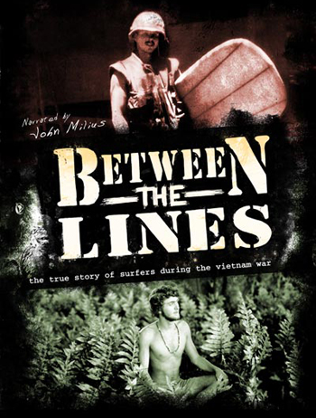

The first link goes Home . The second link is Research . The third link is Services . The fourth link is Collections . The fifth link is About . The sixth and last link is Ask a Librarian!

UNCW's Randall Library and Department of History present: "Between the Lines" Lumina Theater, UNCW Fisher Student Center Free admission! Following the film there will be a panel discussion moderated by Dr. William Moore and featuring Dr. Taylor Fain, Robert Parker and David Watters. Both Parker and Watters were two of Wrightsville Beach's first surfers and served in Vietnam. There will also be a free raffle for the book, Surfing to Saigon. About the Film Between the Lines explores the choice that most draft age surfers faced during the Vietnam War era: either go to war or evade the draft. It was one or the other. Between the Lines delves into the lives of two surfers who choose opposite paths, Pat Farley and Brant Page. While following the lives of these two surfers the film chronicles the impact of the Vietnam War on the surfing lifestyle. From the peaceful shores of Hawaii to the canopy jungles of Vietnam, Between the Lines excavates the surfing cultures response to an extraordinary circumstance. Contact: |

|
Page created and maintained by:Peter Fritzler, Randall Library, University of North Carolina Wilmington
Citing This Page:
Cape Fear Surfing Archive. “Between the Lines." William Randall Library, University of North Carolina Wilmington.
[Created: October 1, 2008;
Cited]. Available from http://library.uncw.edu/surf.